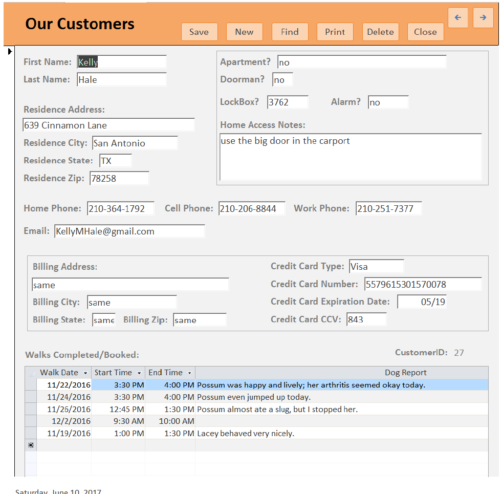
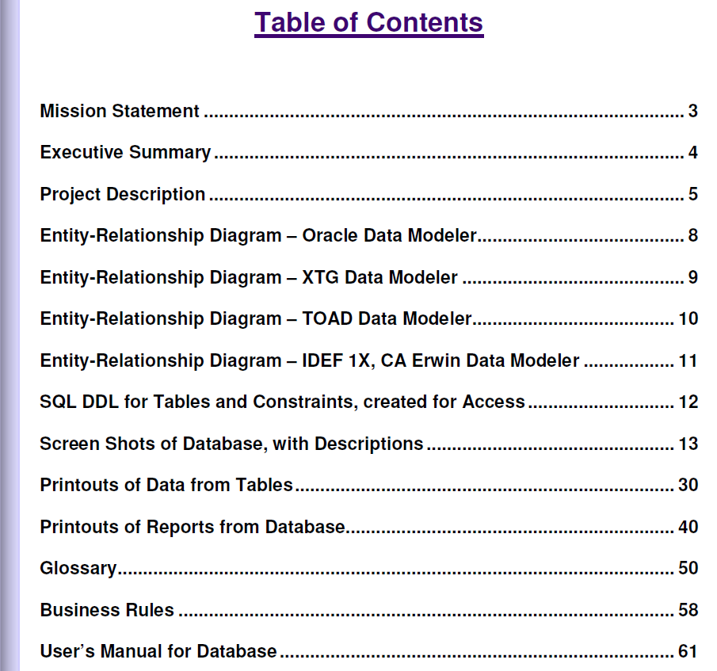
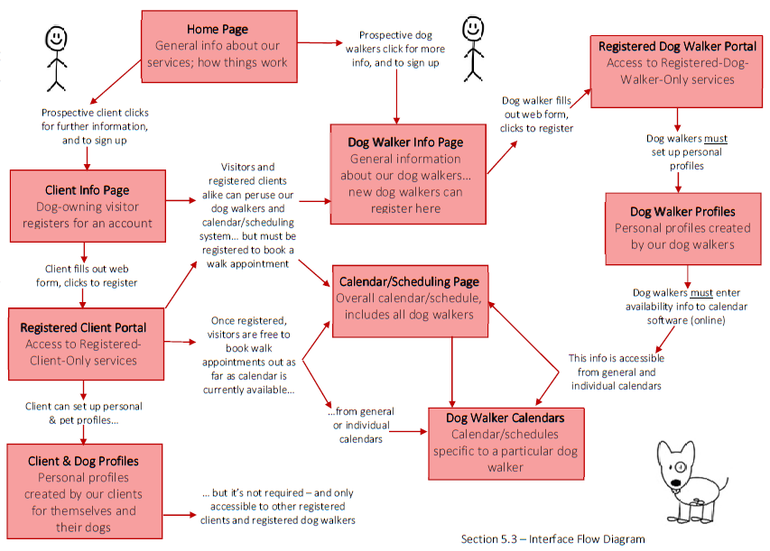
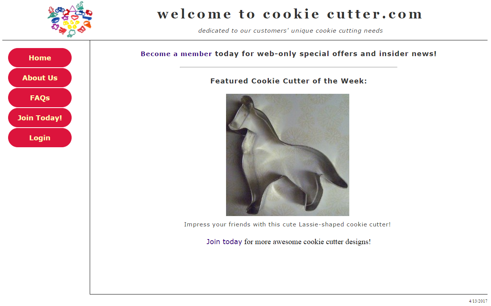
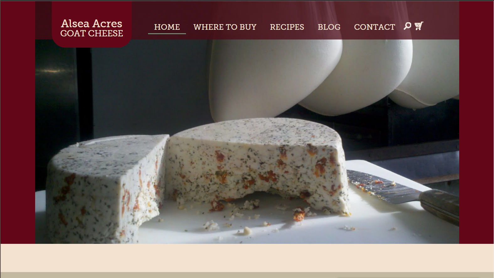
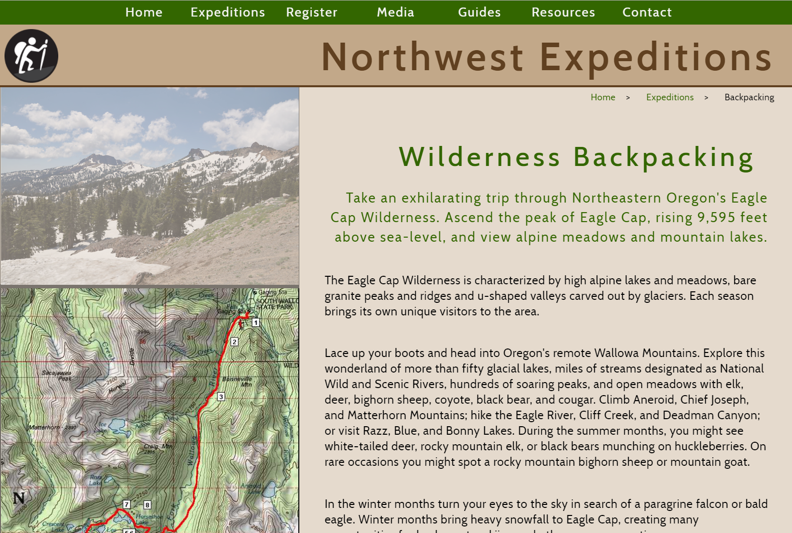
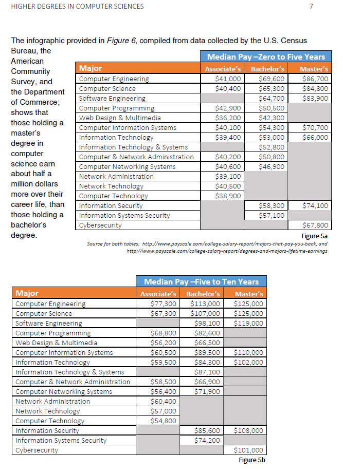
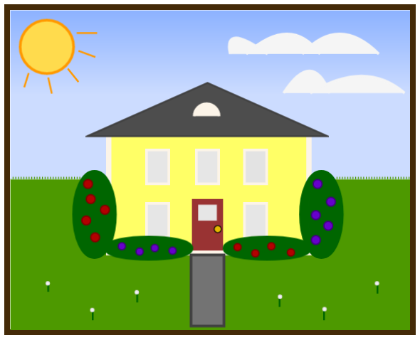

projects & assignments
From Database Management | CIS275
Happy Paws Dog Walking :: Create Database From Scratch
Database Quick Tour
This shows and concisely explains only the most-key components and features of the finished database.
Full Project Description
Here you'll find the full documentation, according to project specifications, as noted in the table of contents.
This term-encompassing project, while challenging and mentally stimulating, was also a lot of fun. The scenario I was assigned was perfectly suited, too: a dog-related business! Assignment specifications included a brief history of the business' origin, an initial business plan, and an overview of the direction they wanted to take things; plus, most importantly, all of the things they needed the database to do for them.
After the early planning steps of thoroughly documenting business rules, processes, and practices; as well as the planned design and outcome for the finished database; I finally set to work developing the database application itself, creating tables, forms, queries, and reports using Data Definition Language and Structured Query Language, along with some built-in features of Microsoft Access.
I plan on spending part of the summer break revisiting this project to keep my skills current, and implement some updates and improvements I didn't have time for originally.
As a part of this class, I also earned the Certificate of Completion from Oracle Academy for SQL.
From Systems Analysis | CIS244
Happy Paws Dog Walking :: Create Specs for Interactive Web App
Happy Paws Dog Walking Web Application Proposal
(above is an excerpt of one of the diagrams)
The core project that wove it's way throughout the term for this class asked us to come up with a business need for which we could devise, conceptually develop, and document a tech-related solution for. I quickly thought of the perfect project: as an extension of the Database Management project, Happy Paws Dog Walking was in serious need of an interactive web app for their customer and dog walkers! The project specifications for the database project even mentioned such an app in their future plans.
This was a major undertaking which I found to be enjoyable, too: conceptualizing and envisioning what the finished web app would look like, what useful features it would have, how it would function, and what it would ultimately do; in what ways it would improve business processes and functions, and hopefully profits. Doing the diagrams was especially eye-opening – pointing out parts of the development process you may have overlooked – and fun.
From Web Application Development | CIS295
Cookie Cutter Corp :: Develop Website with Join & Login Function
Cookie Cutter Corp
(resize browser window to see responsive design)
This was another over-the-course-of-the-term project I had a lot of fun with. We started with a basic website that needed to be converted to modern HTML5 and CSS, plus some design improvements. I implemented responsive design, so the site would look good no matter what device it was accessed on. Later we added JavaScript form validation, connected it to a user/member database, learned the PHP to enable a login (and logout) function – and to prevent users who hadn't been assigned a minimum security level from seeing particular pages, and eventually learned the PHP to do a new member join function.
This project reinforced one of the things that had been made clear in the Database Management class: all commercial websites – along with many other types of websites – work in conjunction with a database... so knowing & understanding basic database concepts, along with some SQL, is a good thing – even when your primary goal is to make websites.
From Web Design I | VC237
Alsea Acres Goat Cheese :: Code Design from Photoshop Layout
What do Goat Girls Do for Fun?
(this webpage doesn't do anything but showcase it's design)
For this class project, we were given a full webpage design/layout in Adobe Photoshop. We had to "slice" out all of the images, optimizing and saving them individually; then use Photoshop to determine exact colors, fonts, sizes, spacing, etc. Once we'd accomplished that, it was up to us to use HTML and CSS to craft a web page that looked exactly like the Photoshop design/layout we'd been given. Since this is a fairly common practice in industry, this was good practice.
The most challenging part for me was that I am not currently adept in the finer points of Photoshop usage, but some classmates who were taking the class from the Visual Communications program helped with that, and I was able to offer some help with code. Overall, this was another project I had fun with – and learned some new tricks too.
Northwest Expeditions :: Design Business Website from Scratch
NW Expeditions – Outdoor Adventures
(responsiveness, slideshow, map click function,
navigation design/functionality; plus overall design)
This was the final project for this class, and had a couple stages. We were given all the specifications, a completed client questionnaire, text content, and images; but it was up to us to determine how to do the design, what would be effective and visually appealing. First we sketched by hand eight different designs, and made the one we deemed best into a wireframe. Then we could get down to the coding and decisions about colors and fonts.
This final project was intended to be a full website, with multiple pages based off the template we created for the initial page... but an unexpected power outage closed the college on a key class day, so the final project turned into this single page. However, I asked the instructor for the full assignment details so that I could work on completing the entire website over summer break. I'd been looking forward to doing the full project; I really like doing this kind of work and it will be a good way to stay in practice.
From Technical Writing | WR227
Analytical Report :: Advisability of and Considerations for Pursuing Higher-Level Degrees in Computer Science
Analytical Report
(above is one of the visuals I created for the report)
While this project didn't take the entire term, it was the primary point of the majority of the term; and there were a few steps to complete leading up to working on producing the final report. Research, gathering sources, data, & information, and planning informative visuals to use as we presented the results of our research in the final version of our Analytical Report.
My chosen topic was on the list of suggested "good topics" from our instructor, but I admit to having a personal interest in the subject as well; so I learned a lot while putting my report together, and had more fun than I anticipated with the overall project.
And then there's these... from JavaScript Web Programming | CIS133JS
Okay, so this one is just for fun and a little silly – plus I haven't completed programming it's full functionality yet; but I like it and learned about JavaScript and jQuery while making it, along with practicing some CSS from Web Design I... plus I hope to learn more as I finish it while practicing programming over the summer break.
Draw a House
with Canvas & Fabric
So, there really isn't much in the way of practical purpose for this finished product... the purpose of it was to learn Canvas and Fabric, and to give us a creative project to work on. There's also some elements of interactivity – just follow the directions on the page and have your sound turned on. Fabric is a vast improvement to straight Canvas, and I had a lot of fun designing my house.